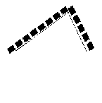
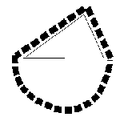
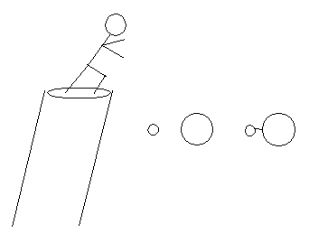

При помощи блестящего мысленного эксперимента Галилей показал, что все тела падают с одинаковой скоростью.
Мысленный эксперимент
Stanford Encyclopedia of Philosophy
James Robert Brown
Мысленный эксперимент - это средство исследования природы при помощи воображения. Достаточно вспомнить несколько известных мысленных экспериментов, чтобы увидеть их огромное влияние и важность для науки: демон Максвелла, лифт Эйнштейна, Гамма микроскоп Гейзенберга, кот Шредингера.
Ещё в 17 веке мысленный эксперимент применяли такие блестящие умы, как Галилей, Декарт, Ньютон и Лейбниц. Создание квантовой механики и теории относительности в наше время было бы немыслимо без использования мысленных экспериментов. Галилей и Эйнштейн, вероятно, были самыми известными "мысленными экспериментаторами", но они не были первыми. Мысленный эксперимент применялся и в средние века и в древние времена.
Один из наиболее красивых ранних мысленных экспериментов (Лукреций, De Rerum Natura ) пытался доказать, что пространство бесконечно. Если имеется граница Вселенной, то мы можем выстрелить в неё из лука. Если стрела пролетит насквозь, то это вообще не граница. Если стрела отскочит назад, как от стены, то у этой космической стены должна быть другая сторона, и, значит, что-то должно быть за предполагаемым краем пространства. В обоих случаях граница вселенной не достигается. Следовательно, пространство бесконечно.
Этот пример хорошо иллюстрирует многие общие особенности мысленного эксперимента. Мы воображаем некоторую ситуацию; выполняем действия; видим, что получается. Этот пример также показывает возможность неверного вывода. В данном случае мы уже знаем, что пространство может быть безграничным и конечным.
Часто реальный аналог мысленного эксперимента невозможен по физическим, техническим или простым практическим причинам. Но эти условия не мешают проведению мысленного эксперимента. Главное в том, что мы, кажется, способны проникнуть в тайны природы при помощи одной только мысли. Вот это и представляет интерес для философии. Можно ли узнать что-то (явно) новое о природе без новых эмпирических данных?
Эрнст Мах (кажется, именно он начал использовать термин Gedankenexperiment ) приводит интересное эмпирическое рассуждение в своей классической "Науке Механики". Он говорит, что мы обладаем большим запасом полученных из опыта "инстинктивных знаний". Они совсем не обязательно должны быть ясно сформулированы, но они практически применяются в подходящей ситуации.
Рис.1a

Рис.1b

Один из его любимых примеров придумал Simon Stevin.
Рис.1a Если перевесить цепь через ребро несимметричной двойной наклонной плоскости без трения, как на рис.1a, то в какую сторону она соскользнёт? Мысленно добавьте несколько звеньев цепи как на рис.1b.
Рис.1b Теперь всё очевидно. С самого начала цепь находилась в статическом равновесии. Иначе, мы получили бы вечный двигатель, но, в соответствии с нашим основанным на опыте "инстинктивным знанием", говорит Мах, это невозможно.
По мнению Томаса Куна, хорошо убеждающий мысленный эксперимент может привести к кризису или, по крайней мере, к выявлению несогласованности в царствующей теории, и, таким образом, внести вклад в смену парадигмы. Итак, мысленный эксперимент способен научить нас чему-то новому о мире, даже если мы не используем новых данных, помогая нам более рационально перестроить наши представления о мире.
В последнее время интерес к мысленному эксперименту заметно увеличился. Brown и Norton представляют предельные позиции от платоновского рационализма до классического эмпиризма, соответственно. Norton утверждает, что любой мысленный эксперимент - это реальный (возможно неявный) аргумент; он исходит из опыта и использует логические или индуктивные правила вывода результата. Живописные подробности любого мысленного эксперимента, делающие его похожим на настоящий эксперимент, могут быть психологически полезными, но они, строго говоря, излишни. Итак, говорит Norton, мы никогда не выходим за рамки эмпирических предпосылок, против чего не стал бы возражать ни один эмпирик.
Brown придерживается другой позиции. В некоторых особых случаях мы всё же отбрасываем старые данные, чтобы получить новые априорные знания о природе. Галилей показал, что все тела падают с одинаковой скоростью при помощи блестящего мысленного эксперимента, что привело к крушению царствующих в то время Аристотелевских взглядов. Они заключались в том, что тяжелые тела падают быстрее, чем лёгкие (Т > Л).
Рис.2

Но рассмотрите Рис.2 , на котором тяжелое пушечное ядро Т и легкая мушкетная пуля Л соединены вместе и образуют новый более тяжёлый предмет Т+Л . Он должен падать быстрее, чем пушечное ядро. Но он же должен падать медленнее, чем пушечное ядро, так как лёгкая мушкетная пуля должна тормозить движение тяжёлого ядра. Мы получили противоречие: Т + Л > Т и Т > Т + Л . Это и конец теории Аристотеля, и правильный очевидный вывод: все они падают с одинаковой скоростью Т = Л = Т + Л .
Говорят, что это априорные (выдуманные, а значит ненадёжные) знания о природе, так как не использовались никакие новые данные, не было сделано логического вывода из старых данных, и они не являются чисто логической истиной. Такое понимание мысленного эксперимента развивается далее путём привязывания априорной эпистемологии к прежним представлениям о законах природы как связях между существующими абстрактными сущностями. Этот вполне платоновский взгляд не слишком далёк от платоновского подхода к математике, который отстаивается и Гёделем.
Два представленных здесь взгляда могли бы расположиться на противоположных концах спектра позиций, с которых рассматривается мысленный эксперимент. Есть удачные новые альтернативные взгляды, например, Sorensen в духе Маха считает, что мысленный эксперимент - это "предельный случай" обычного эксперимента; он способен достичь своей цели без фактического выполнения. В своей книге Sorensen обсуждает мысленный эксперимент в философии разума, в этике и других разделах философии и науки. Есть и другие перспективные идеи. Gooding особо подчеркивает похожесть технологий в мысленном и реальном экспериментах. Miscevic и Nersessian связывают мысленный эксперимент с "ментальными моделями". Horowitz и Massey (1991) тоже имеют несколько перспективных работ на эту тему.
Copyright © 1996 by
James Robert Brown
University of Toronto
Перевод Е.Корниенко